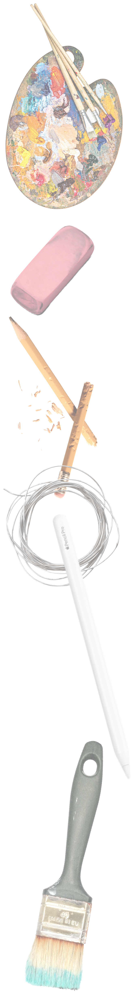
Art as a Way of Looking
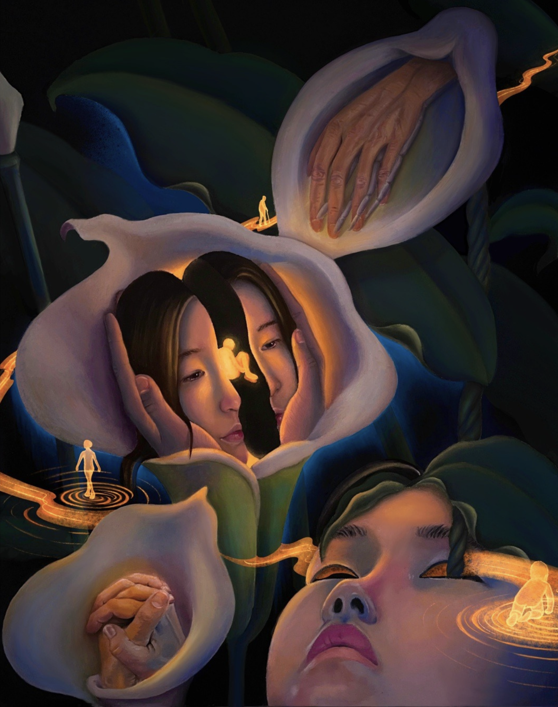
In high school
art was a mirror
I made art by looking inward
faces opening into other faces
dreams passing through bodies
fish swimming between memory and time
and questions about who I might become
Over time
the mirror became a window
I came to New York City
and the world entered the frame
people passing
light falling across a building
small moments already disappearing
I still make art to understand
and remember what the world looked like
while I was here
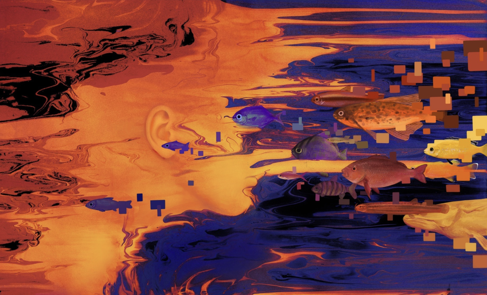
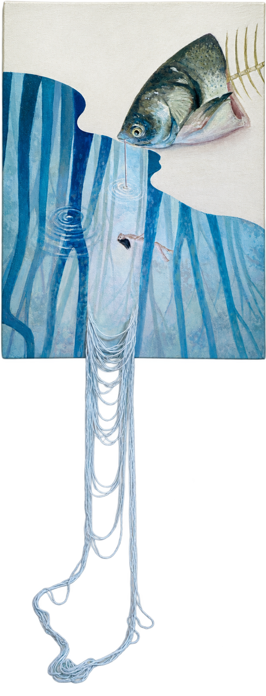
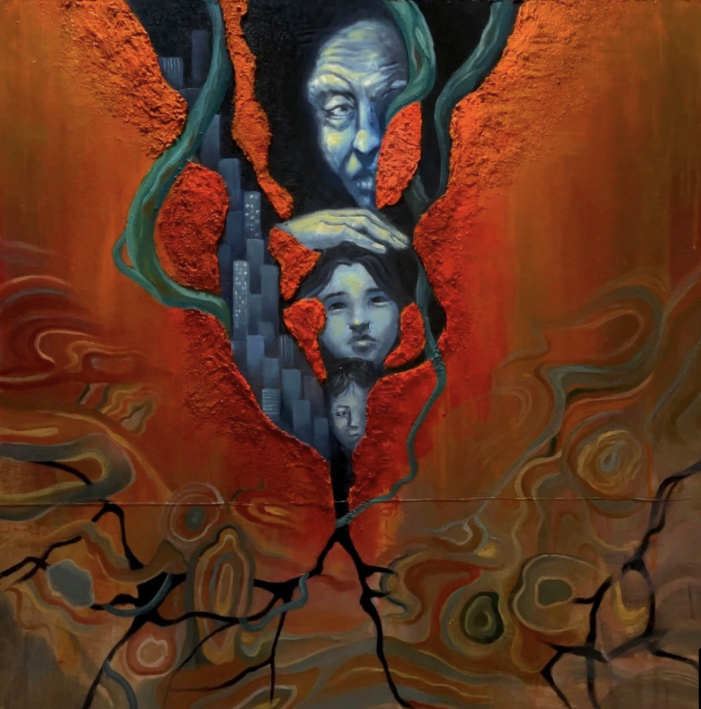
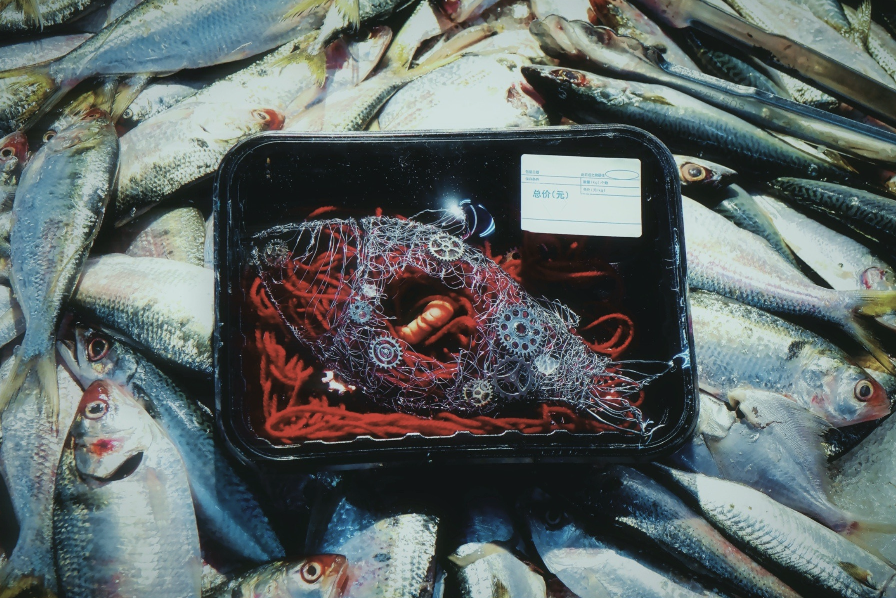
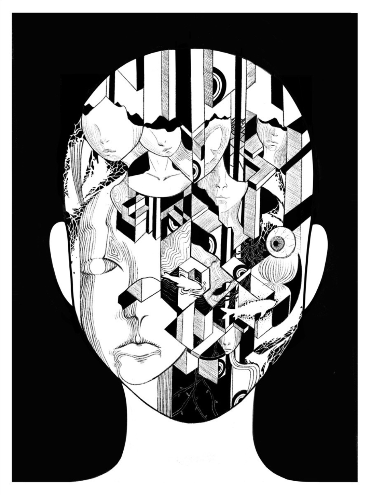
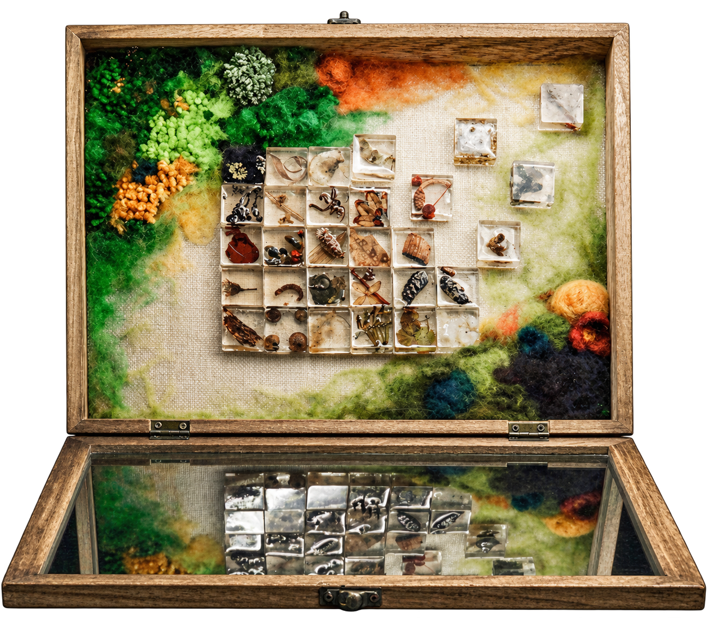
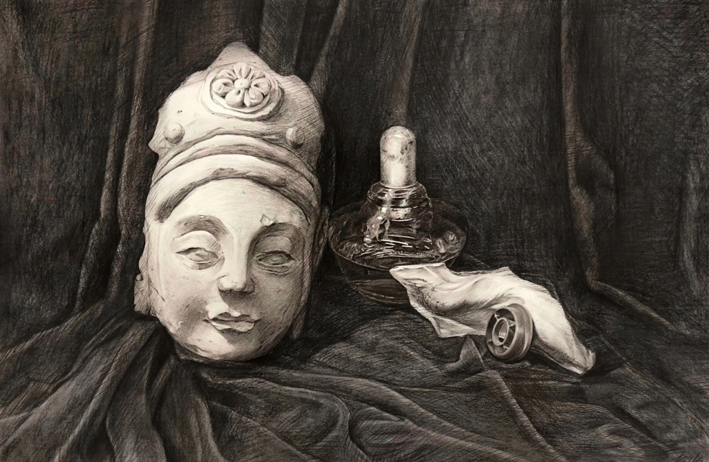
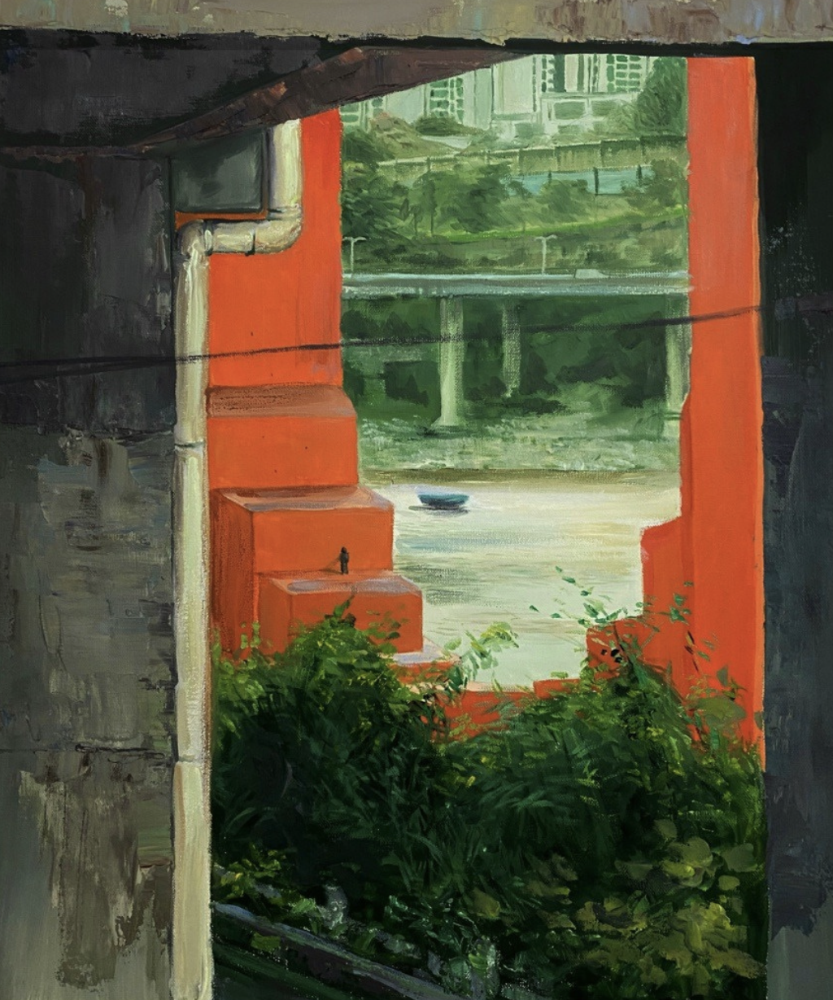

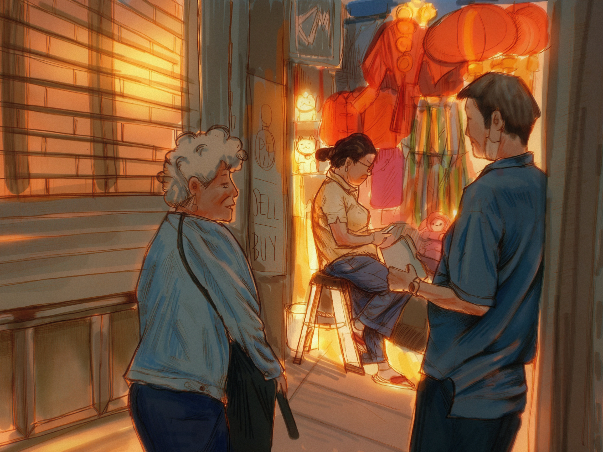
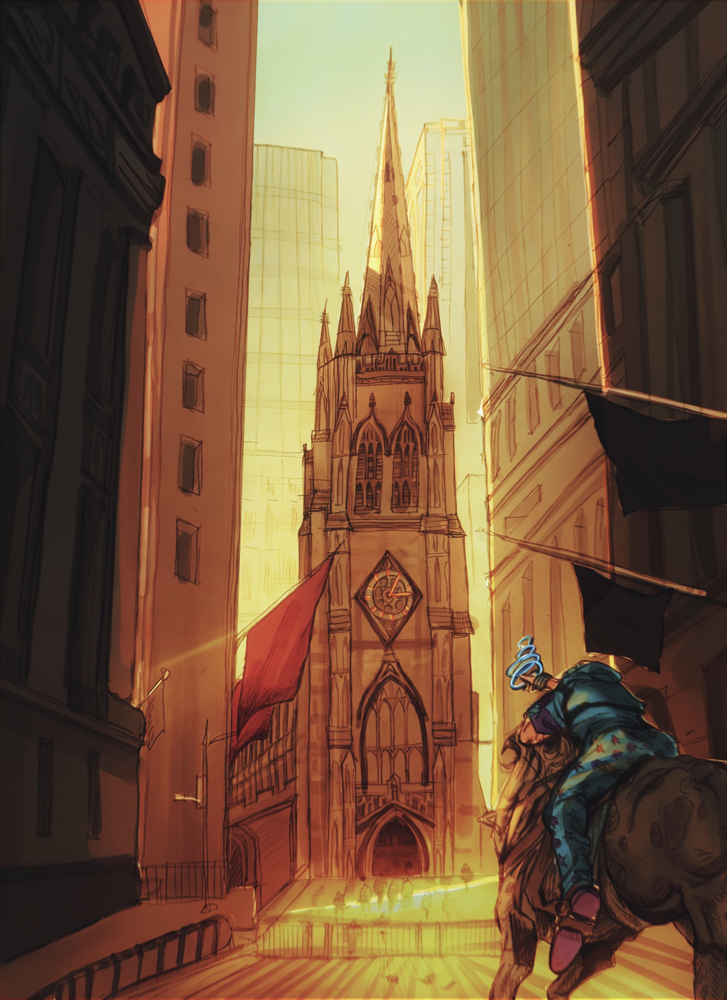
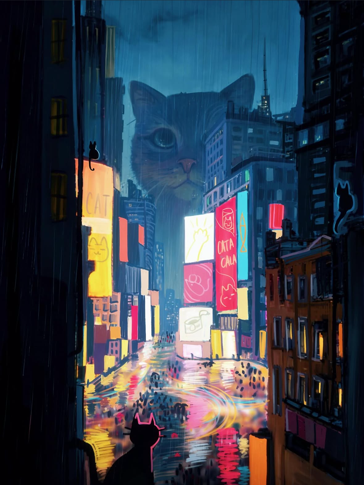
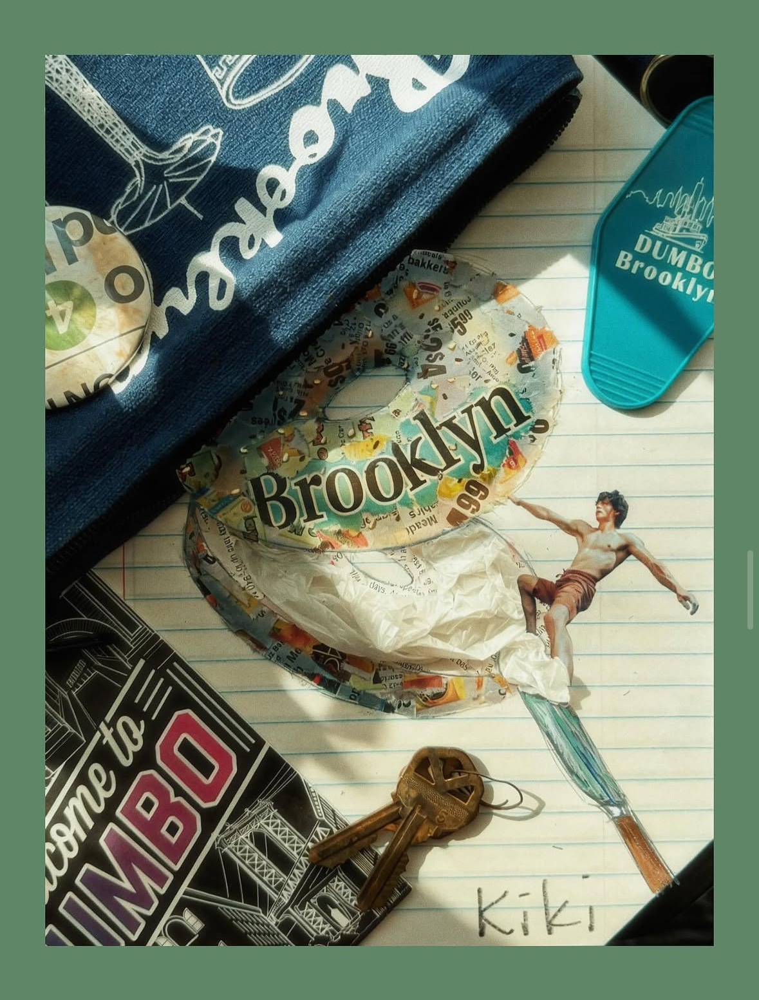
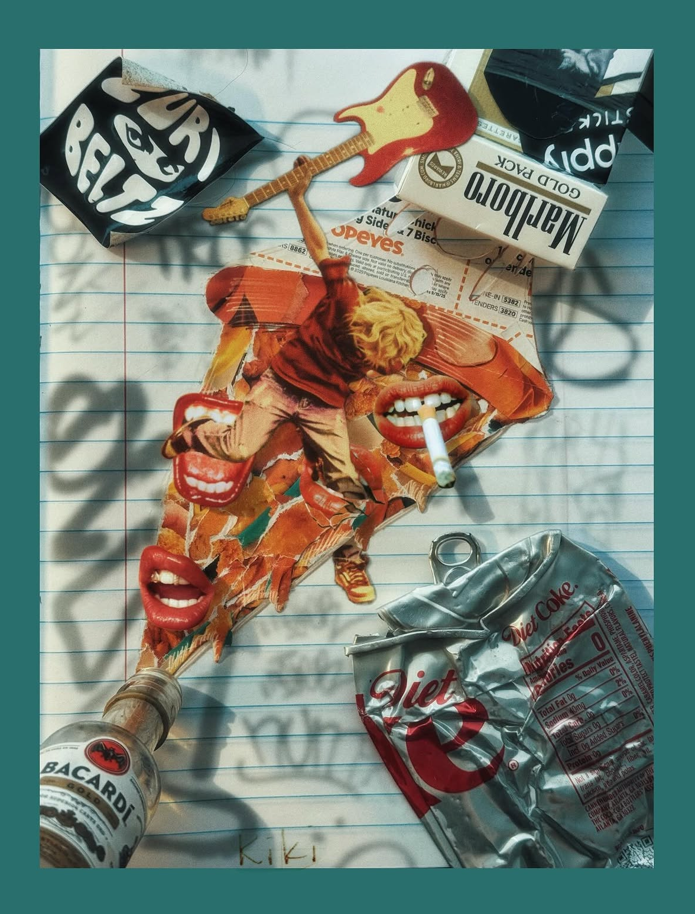
↩ put brush back
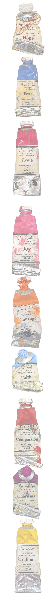